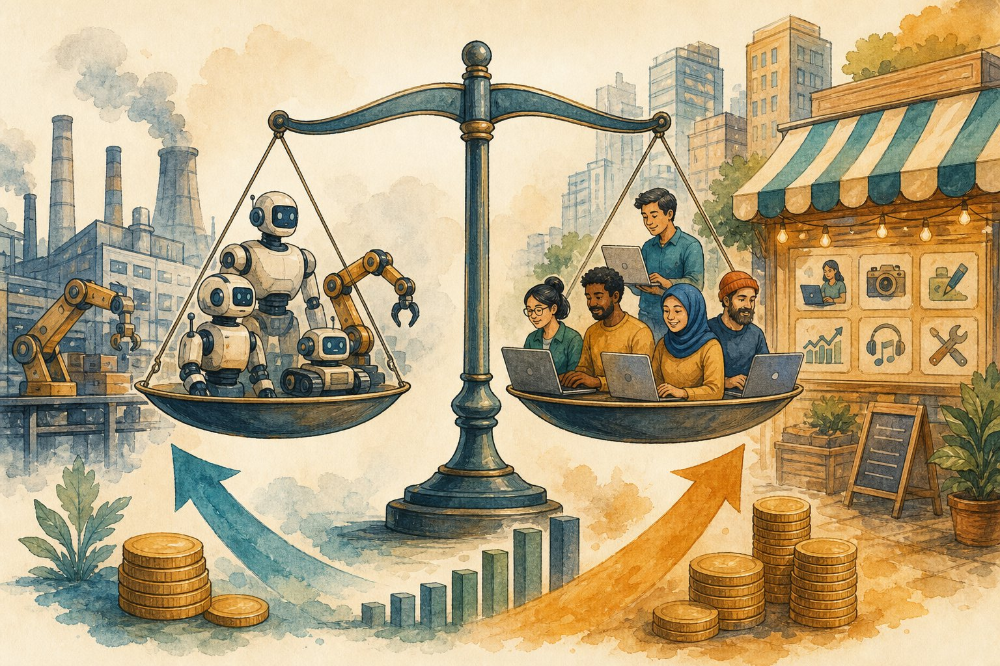

AI economics & jobs
Will AI take your job or 10× it? Learn what automation research actually says, where new work comes from, and how to price, position, and future-proof yourself with the skills in this book.

Figure 60.1 — Tasks get automated; roles get reshaped; new work appears. Bet on the reshape.
1. What the research says (no hype)
- Tasks ≠ jobs: automation eats tasks (drafting, triage, boilerplate). Jobs are bundles — they reshape around what’s left: judgment, relationships, accountability.
- Exposure ≠ unemployment: highly-exposed roles (copywriting, basic coding, support) see wage pressure + output explosion, not instant disappearance. History: ATMs → more bank branches (for a while); spreadsheets → more analysts.
- J-curve: productivity dips during reorganisation, then compounds. Firms/individuals who redesign workflows capture it; those who “add AI” as a garnish don’t.
- Skill premium shifts: routine execution cheapens; verification, taste, system design, and trust command premiums. This book’s evals/debugging chapters are the premium.
2. Position yourself: the 2×2
3. Monetise now: freelance + portfolio playbook
- Pick a painful workflow (inbox triage, report generation, catalogue cleanup) — sell outcomes (hours saved), not “AI”.
- Productise one offer: fixed scope, fixed price, 2-week delivery. Custom everything = agency trap.
- Show receipts: before/after metrics, demo videos, 3 public case studies. This book’s capstone (Ch 37) + system designs are your template.
- Price on value: anchor to salary-equivalent hours saved; raise rates as proof accumulates; retainers beat one-offs.
Career pitfalls
Tool-collecting without judgment (commodity seat) · ignoring evals/verification (the actual premium skill) · no public proof of work · pricing by hour instead of outcome · assuming today’s hot tool is a moat.
Short notes
Tasks automate; roles reshape; J-curve rewards redesign. Premiums move to verification, taste, system design, trust. Move up-and-right (judgment × leverage). Sell outcomes via one productised offer, prove with metrics, price on value, keep public receipts.
Point notes
- Tasks ≠ jobs.
- Redesign, don’t garnish.
- Verification = premium.
- Outcomes > hours.
- Proof of work, public.
MCQs
5 questions1. “Tasks ≠ jobs” implies the winning response to automation is to:
2. The productivity J-curve says AI gains come:
3. The durable “10× seat” combines:
4. Freelancers should price AI services by:
5. Which skill gains premium as execution cheapens?
Practice questions
P1. A copywriter fears ChatGPT. Give the 90-day reshape plan (tasks → new bundle).
Automate drafts/outlines (AI), keep voice/strategy/client judgment. New bundle: content strategist — briefs, taste, distribution, analytics. 90 days: 3 AI-assisted case studies with traffic/revenue deltas, one productised “content engine” offer, rates on outcome. From typist to editor-in-chief.
P2. Price this: RAG support bot saving a 20-person team 15 hrs/week total.
15 hrs × loaded cost (~₹800/hr blended) ≈ ₹48k/month value. Price: setup ₹80k–1.2L (2 weeks) + ₹25–35k/month retainer (monitoring, evals, updates) — client keeps ~40% of value day one, more as it compounds. Quote value + proof (pilot metrics), never hours.
P3. Your firm “added AI” but productivity is flat. Diagnose with the J-curve.
Garnish, not redesign: same approvals, same handoffs, AI as a faster typewriter. Fix: map the workflow, delete steps AI obsoletes, redefine roles (verifiers, exception-handlers), retrain, measure end-to-end cycle time (not tool logins). Expect a dip during change, then the compounding.